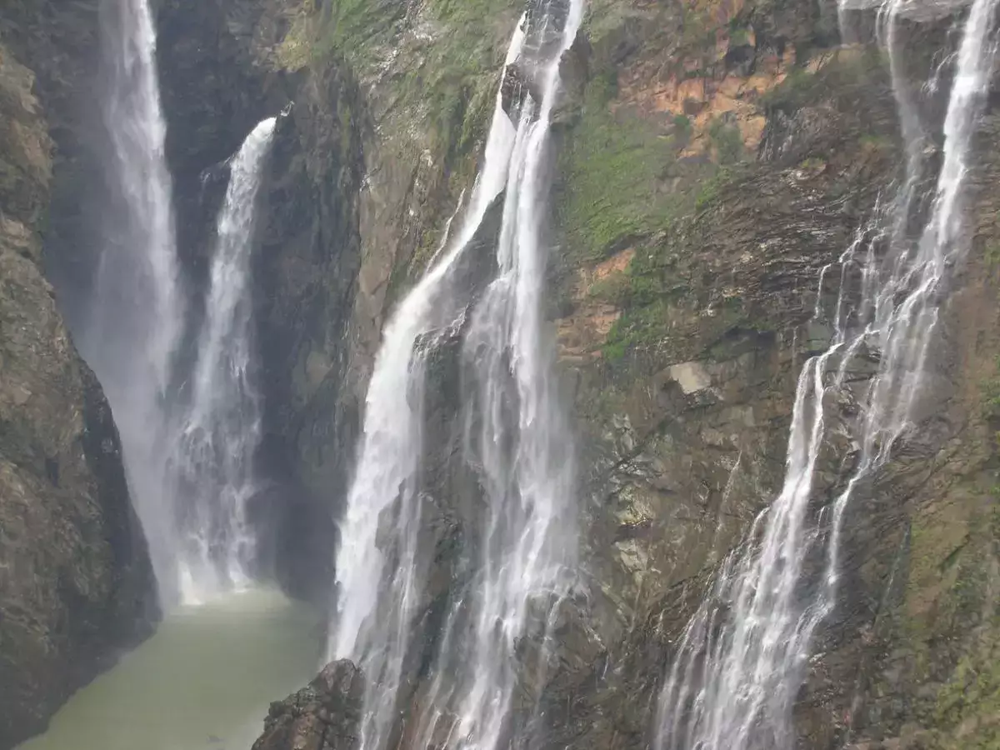
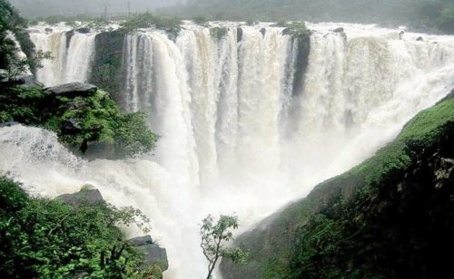
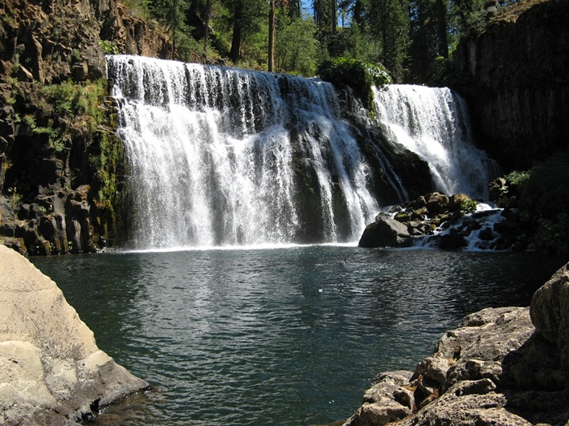
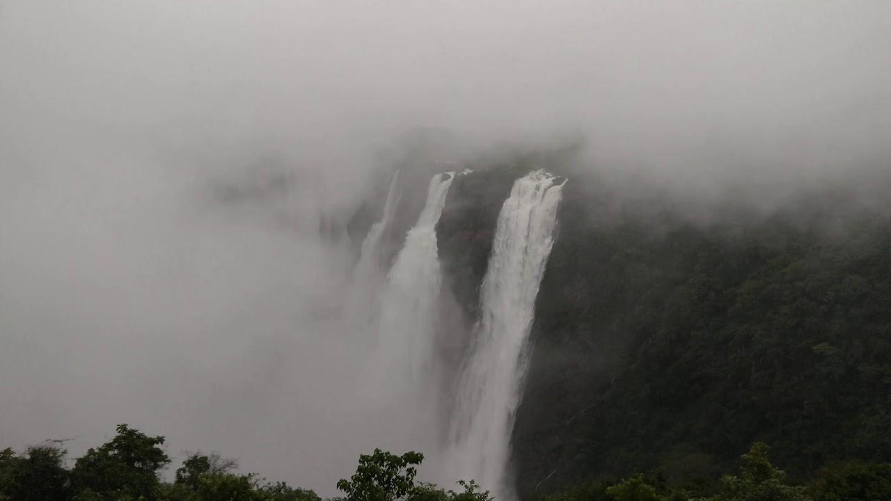
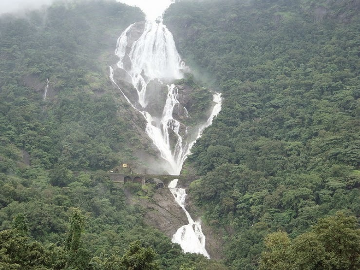
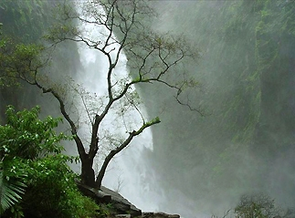
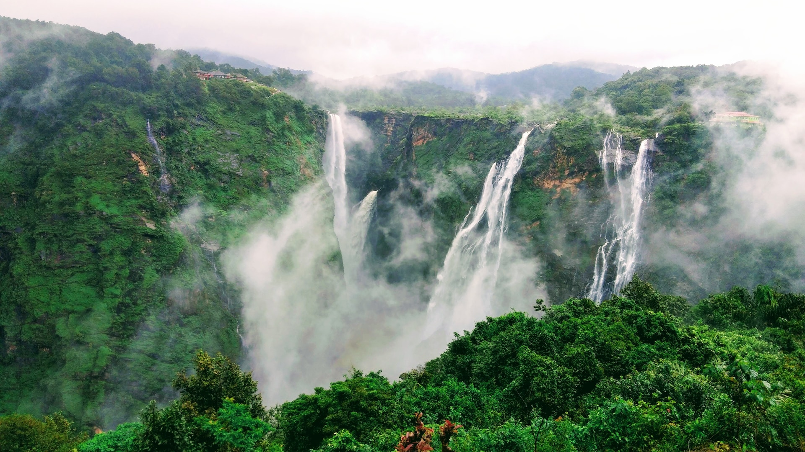
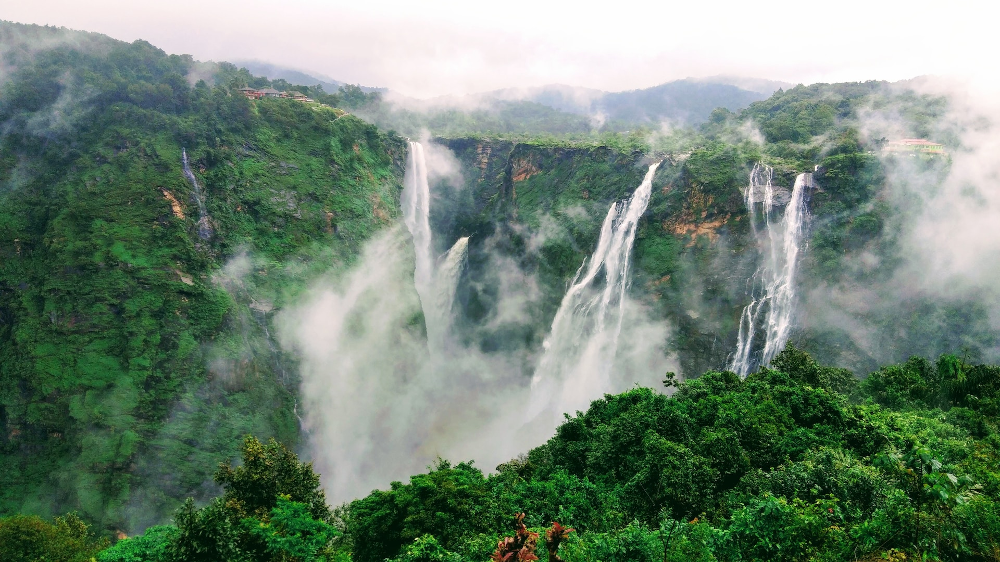
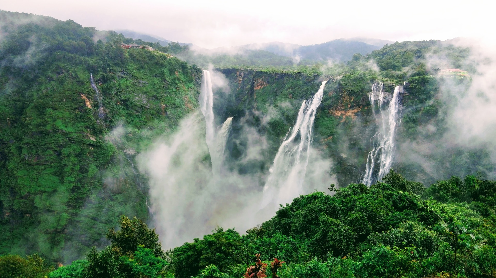
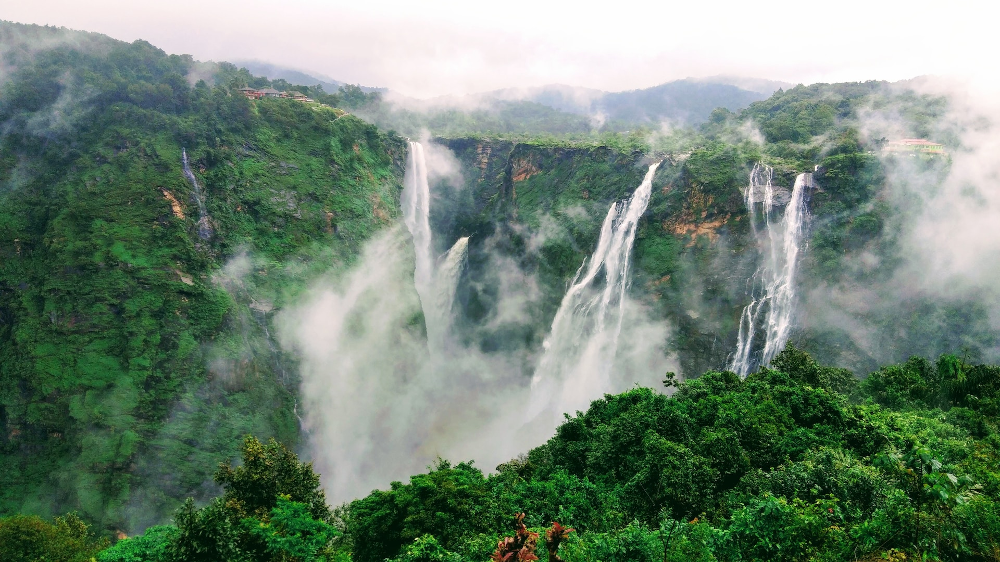

 


Kunchikal Falls is a waterfall in India located in the Nidagodu village near Masthikatte in the Shimoga district of Karnataka state.Kunchikal Falls cascades down rocky boulders and the total height of the falls is 455 meters (1,493 feet), according to the World Waterfall Database. Kunchikal Falls is formed by the Varahi river. After the construction of the Mani Dam near Masthikatte and an underground power generation station near Hulikal, Shimoga district, the water flow to the falls has greatly reduced and is visible only during the rainy season (July-Sept). As the falls are within a restricted area,[citation needed] a gate pass is required to visit. The nearest airport is at Mangalore, situated 138 km (86 mi) from Kunchikal Falls.
